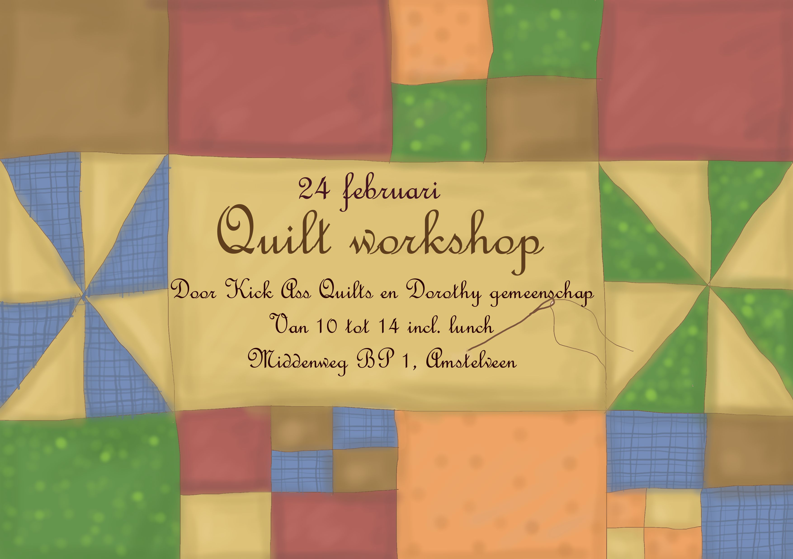

“Quilten is een eeuwenoud ambacht waar milieubewustzijn, plezier, mindfulness en verbinding centraal staan.” -Rianne van Kick Ass Quilts
Vind je de winter ook zo’n fijne tijd om te handwerken? Op 24 februari organiseren we met de Dorothy gemeenschap een Quilt workshop van 10.00 tot 14.00. Met quilten naai je lappen stof aan elkaar om iets nieuws te maken, vaak in een leuk patroon. Heb je het al eerder gedaan, of wil je iets nieuws leren? Deze workshop wordt verzorgd door Rianne van Kick Ass Quilts. Wil je meer weten over quilten, check Riannes website of kom naar de workshop. Het is gratis, wij verzorgen een lekkere lunch. Interesse? Meld je aan via contact@dorothygemeenschap.nl.
Elke donderdagochtend om 9:15 bidden we in onze kapel op wielen, achter op het erf. We bidden in de stijl van taizé, meestal in een klein groepje. Iedereen is welkom!
Elke woensdag werken we vanaf 10:00 in onze moestuin. Die is bij de buren op de Middenweg BP 6. Iedereen die het leuk vindt kan mee komen werken, en als er iets geoogst wordt krijg je natuurlijk wat mee naar huis. Rond 13:00 lunchen we samen. Kinderen zijn ook welkom, die van ons zijn er ook vaak!
Op donderdagen klussen we vaak in en rond het huis, of werken we op ons erf. Vind je het leuk om een keertje mee te doen? Altijd leuk! Mail ons even over waar we wanneer mee bezig zijn: contact@dorothygemeenschap.nl.